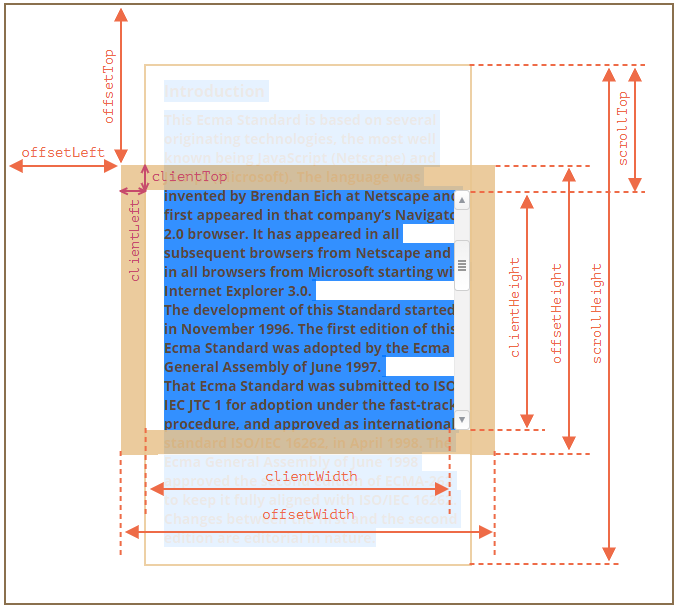

Документ
Браузерное окружение, спецификации
JavaScript может использоваться в браузере, на веб-сервере или в какой-то другой среде, даже в кофеварке. Каждая среда предоставляет свою функциональность, которую спецификация JavaScript называет окружением. Окружение предоставляет свои объекты и дополнительные функции, в дополнение базовым языковым. На картинке в общих чертах показано, что доступно для JavaScript в браузерном окружении:Корневой объект window выступает в 2 ролях: 1. Это глобальный объект для JavaScript-кода. 2. Он также представляет собой окно браузера и располагает методами для управления им. alert(window.innerHeight); // 964 (внутренняя высота окна браузера)
DOM (Document Object Model)
Document Object Model, сокращённо DOM – объектная модель документа, которая представляет все содержимое страницы в виде объектов. Объект document – основная «входная точка». С его помощью можно что-то создавать или менять на странице. document.body.style.background = "red"; setTimeout(() => document.body.style.background = "", 1000);BOM (Browser Object Model)
Объектная модель браузера (Browser Object Model, BOM) – это дополнительные объекты, предоставляемые браузером (окружением), чтобы работать со всем, кроме документа. Объект navigator даёт информацию о самом браузере и операционной системе. Объект location позволяет получить текущий URL и перенаправить браузер по новому адресу. alert(location.href); // показывает текущий URL if (confirm("Перейти на Wikipedia?")) { location.href = "https://wikipedia.org"; // перенаправляет браузер на другой URL }DOM-дерево
В соответствии с объектной моделью документа («Document Object Model», коротко DOM), каждый HTML-тег является объектом. Вложенные теги являются «детьми» родительского элемента. Текст, который находится внутри тега, также является объектом.Пример DOM
<!DOCTYPE HTML> <html> <head> <title>О лосях</title> </head> <body> Правда о лосях. </body> </html> DOM – это представление HTML-документа в виде дерева тегов. Вот как оно выглядит:Теги являются узлами-элементами (или просто элементами). Они образуют структуру дерева: <html> – это корневой узел, <head> и <body> его дочерние узлы и т.д. Пробелы и переводы строки – это полноправные символы, как буквы и цифры. Они образуют текстовые узлы и становятся частью дерева DOM. Существует всего два исключения из этого правила: 1. По историческим причинам пробелы и перевод строки перед тегом <head> игнорируются 2. Если записать что-либо после закрывающего тега </body>, браузер автоматически перемещает эту запись в конец body, поскольку спецификация HTML требует, чтобы всё содержимое было внутри <body>. Поэтому после закрывающего тега </body> не может быть никаких пробелов. В остальных случаях всё просто – если в документе есть пробелы (или любые другие символы), они становятся текстовыми узлами дерева DOM, и если мы их удалим, то в DOM их тоже не будет.
Автоисправление
Если браузер сталкивается с некорректно написанным HTML-кодом, он автоматически корректирует его при построении DOM. Например, в начале документа всегда должен быть тег <html>. Даже если его нет в документе – он будет в дереве DOM, браузер его создаст. То же самое касается и тега <body>. Важный «особый случай» – работа с таблицами. По стандарту DOM у них должен быть <tbody>, но в HTML их можно написать (официально) без него. В этом случае браузер добавляет <tbody> в DOM самостоятельно.Другие типы узлов
Есть и некоторые другие типы узлов, кроме элементов и текстовых узлов. Например, узел-комментарий. Казалось бы – зачем комментарий в DOM? Он никак не влияет на визуальное отображение. Но есть важное правило: если что-то есть в HTML, то оно должно быть в DOM-дереве. Существует 12 типов узлов. Но на практике мы в основном работаем с 4 из них: 1. document – «входная точка» в DOM. 2. узлы-элементы – HTML-теги, основные строительные блоки. 3. текстовые узлы – содержат текст. 4. комментарии – иногда в них можно включить информацию, которая не будет показана, но доступна в DOM для чтения JS.Взаимодействие с консолью
1. На вкладке Elements выбрать элемент. 2. Нажать Esc – прямо под вкладкой Elements откроется Console. Последний элемент, выбранный во вкладке Elements, доступен в консоли как $0; предыдущий, выбранный до него, как $1 и т.д. Например, $0.style.background = 'red' сделает выбранный элемент красным.Навигация по DOM-элементам
Самые верхние элементы дерева доступны как свойства объекта document: <html> = document.documentElement <body> = document.body <head> = document.head Есть одна тонкость: document.body может быть равен null Нельзя получить доступ к элементу, которого ещё не существует в момент выполнения скрипта. В частности, если скрипт находится в <head>, document.body в нём недоступен, потому что браузер его ещё не прочитал. В DOM значение null значит «не существует» или «нет такого узла».Дети: childNodes, firstChild, lastChild
Дочерние узлы (или дети) – элементы, которые являются непосредственными детьми узла. Потомки – все элементы, которые лежат внутри данного, включая детей, их детей и т.д. Коллекция childNodes содержит список всех детей, включая текстовые узлы. Свойства firstChild и lastChild обеспечивают быстрый доступ к первому и последнему дочернему элементу. Если у тега есть дочерние узлы, условие ниже всегда верно: elem.childNodes[0] === elem.firstChild elem.childNodes[elem.childNodes.length - 1] === elem.lastChild childNodes - это коллекция - особый перебираемый объект-псевдомассив. 1. Для перебора коллекции можно использовать цикл for..of (есть требуемый для этого метод Symbol.iterator). 2. Методы массивов не будут работать, т.к. коллекция - не массив. Если нужно использовать методы массивов, можно создать настоящий массив с помощью Array.from alert( Array.from(document.body.childNodes).filter ); // сделали массив DOM-коллекции – только для чтения Нельзя заменить один дочерний узел на другой просто написав childNodes[i] = ...Соседи и родитель
Соседи – это узлы, у которых один и тот же родитель. Следующий узел того же родителя (следующий сосед) – в свойстве nextSibling, а предыдущий – в previousSibling. alert( document.head.nextSibling ); // HTMLBodyElement alert( document.body.previousSibling ); // HTMLHeadElement Родитель доступен через parentNode. alert( document.body.parentNode === document.documentElement ); // trueНавигация только по элементам
children – коллекция детей, которые являются элементами. firstElementChild, lastElementChild – первый и последний дочерний элемент. previousElementSibling, nextElementSibling – соседи-элементы. parentElement – родитель-элемент. Свойство parentElement возвращает родитель-элемент, а parentNode возвращает «любого родителя». Обычно эти свойства одинаковы: они оба получают родителя. За исключением document.documentElement: alert( document.documentElement.parentNode ); // выведет document alert( document.documentElement.parentElement ); // выведет null for (let elem of document.body.children) { console.log(elem); // DIV, UL, DIV, SCRIPT (выводит только элементы) } for (let elem of document.body.childNodes) { console.log(elem); // #text div #text .. (выведет все узлы) }Ещё немного ссылок: таблицы
Некоторые типы DOM-элементов предоставляют для удобства дополнительные свойства, специфичные для их типа. Таблицы – отличный пример таких элементов. Элемент <table> поддерживает: table.rows – коллекция строк <tr> таблицы. table.caption/tHead/tFoot – ссылки на элементы таблицы <caption>, <thead>, <tfoot>. table.tBodies – коллекция элементов таблицы <tbody> (по спецификации их может быть больше одного). tbody.rows – коллекция строк <tr> секции. tr.cells – коллекция <td> и <th> ячеек, находящихся внутри строки <tr>. tr.sectionRowIndex – номер строки <tr> в текущей секции <thead>/<tbody>/<tfoot>. tr.rowIndex – номер строки <tr> в таблице (включая все строки таблицы). td.cellIndex – номер ячейки в строке <tr> (либо th.cellIndex). <table id="table"> <tr> <td>один</td><td>два</td> </tr> <tr> <td>три</td><td>четыре</td> </tr> </table> <script> alert( table.rows[0].cells[1].innerHTML ) // "два" </script> Итого Получив DOM-узел, мы можем перейти к его ближайшим соседям используя навигационные ссылки. Есть два основных набора ссылок: Для всех узлов: parentNode, childNodes, firstChild, lastChild, previousSibling, nextSibling. Только для узлов-элементов: parentElement, children, firstElementChild, lastElementChild, previousElementSibling, nextElementSibling.Поиск: getElement*, querySelector*
Для того, чтобы получить произвольный элемент страницы в DOM есть дополнительные методы поиска.document.getElementById
Если у элемента есть атрибут id, то можно получить его вызовом document.getElementById(id), где бы он ни находился. <div id="elem">Element</div> let elem = document.getElementById('elem'); elem.style.background = 'red'; Также есть глобальная переменная с именем, указанным в id: <div id="el"> <div id="elem-content">Элемент</div> </div> el.style.background = 'red'; window['elem-content']... // в имени id есть дефис, он не может служить названием переменной, но можно обратиться к нему через квадратные скобки и кавычки Если в JavaScript объявить переменную с тем же названием как id элемента, то она переназначит такую переменную. В реальной жизни лучше использовать document.getElementById.querySelectorAll
Самый универсальный метод поиска – это elem.querySelectorAll(css), он возвращает все элементы внутри elem, удовлетворяющие данному CSS-селектору. Пример: document.querySelectorAll('#age-table label') <ul> <li>Этот</li> <li>тест</li> </ul> <ul> <li>полностью</li> <li>пройден</li> </ul> <script> let elements = document.querySelectorAll('ul > li:last-child'); // ищет для ul прямые дочерние элементы li, которые являются последними детьми ul. for (let elem of elements) { alert(elem.innerHTML); // "тест", "пройден" } </script> Псевдоклассы тоже работают Псевдоклассы в CSS-селекторе, в частности :hover и :active, также поддерживаются. Например, document.querySelectorAll(':hover') вернёт коллекцию (в порядке вложенности: от внешнего к внутреннему) из текущих элементов под курсором мыши.
querySelector
Метод elem.querySelector(css) возвращает первый элемент, соответствующий данному CSS-селектору. document.querySelector('form[name="search"]'); // ищет тег form с атрибутом name="search".getElementsBy*
Существуют также другие методы поиска элементов по тегу, классу и так далее. На данный момент, они скорее исторические, так как querySelector более чем эффективен. elem.getElementsByTagName(tag) ищет элементы с данным тегом и возвращает их коллекцию. Передав "*" вместо тега, можно получить всех потомков. elem.getElementsByClassName(className) возвращает элементы, которые имеют данный CSS-класс. document.getElementsByName(name) возвращает элементы с заданным атрибутом name. Редко используется. Поиск можно вести только по document (т.е document.getElementsByName('...')) let divs = document.getElementsByTagName('div'); let articles = divs[0].getElementsByClassName('article'); let form = document.getElementsByName('my-form')[0]; // my-form - значение атрибута nameЖивые коллекции
Все методы "getElementsBy*" возвращают живую коллекцию. Такие коллекции всегда отражают текущее состояние документа и автоматически обновляются при его изменении. Напротив, querySelectorAll возвращает статическую коллекцию. Это похоже на фиксированный массив элементов. Длина статической коллекции не меняется после появления нового элемента в документе. <div>First div</div> <script> let divs = document.getElementsByTagName('div'); alert(divs.length); // 1 </script> <div>Second div</div> <script> alert(divs.length); // 2 (для querySelectorAll значение не поменялось бы) </script>matches
Метод elem.matches(css) ничего не ищет, а проверяет, удовлетворяет ли elem CSS-селектору, и возвращает true или false. <a href="http://example.com/file.zip">...</a> <a href="http://ya.ru">...</a> <script> // может быть любая коллекция вместо document.body.children for (let elem of document.body.children) { if (elem.matches('a[href$="zip"]')) { alert("Ссылка на архив: " + elem.href ); } } </script>closest
Предки элемента – родитель, родитель родителя, его родитель и так далее. Вместе они образуют цепочку иерархии от элемента до вершины. Метод elem.closest(css) ищет ближайшего предка, который соответствует CSS-селектору. Сам элемент также включается в поиск. Метод возвращает либо предка, либо null, если такой элемент не найден. <h1>Содержание</h1> <div class="contents"> <ul class="book"> <li class="chapter">Глава 1</li> <li class="chapter">Глава 2</li> </ul> </div> <script> let chapter = document.querySelector('.chapter'); // LI alert(chapter.closest('.book')); // UL alert(chapter.closest('.contents')); // DIV alert(chapter.closest('h1')); // null (потому что h1 - не предок) </script> elemA.contains(elemB) вернёт true, если elemB находится внутри elemA (elemB потомок elemA) или когда elemA == elemB.Свойства узлов: тип, тег и содержимое
Классы DOM-узлов
Каждый DOM-узел принадлежит определённому классу. Классы формируют иерархию. Весь набор свойств и методов является результатом наследования. Основные классы: EventTarget -> Node -> Element -> HTMLElement -> HTMLBodyElement Text SVGElement HTMLInputElement Comment HTMLAnchorElement EventTarget – это корневой «абстрактный» класс. Объекты этого класса никогда не создаются. Он служит основой, благодаря которой все DOM-узлы поддерживают так называемые «события». Node – также является «абстрактным» классом, и служит основой для DOM-узлов. Он обеспечивает базовую функциональность: parentNode, nextSibling, childNodes и т.д. (это геттеры). Объекты класса Node никогда не создаются. Element – это базовый класс для DOM-элементов. Он обеспечивает навигацию на уровне элементов: nextElementSibling, children и методы поиска: getElementsByTagName, querySelector. Браузер поддерживает не только HTML, но также XML и SVG. HTMLElement – является базовым классом для всех остальных HTML-элементов. Для того, чтобы узнать имя класса DOM-узла, есть свойство constructor. Оно ссылается на конструктор класса, и в свойстве constructor.name содержится его имя: alert( document.body.constructor.name ); // HTMLBodyElement …Или можно просто привести его к строке: alert( document.body ); // [object HTMLBodyElement] Для JavaScript-объектов команды console.log и console.dir обычно выводят одно и то же. Но для DOM-элементов они работают по-разному: console.log(elem) выводит элемент в виде DOM-дерева. console.dir(elem) выводит элемент в виде DOM-объекта, что удобно для анализа его свойств.Свойство «nodeType»
Свойство nodeType предоставляет ещё один, «старомодный» способ узнать «тип» DOM-узла. Его значением является цифра: elem.nodeType == 1 для узлов-элементов, elem.nodeType == 3 для текстовых узлов, elem.nodeType == 8 для узлов-комментариев, elem.nodeType == 9 для объектов документа. console.log(document.body.nodeType) // 1 console.log(document.body.firstChild.nodeType) // 3 console.log(document.nodeType) // 9 В современных скриптах чтобы узнать тип узла, можно использовать метод instanceof и другие способы проверить класс, но иногда проще использовать nodeType.Тег: nodeName и tagName
Получив DOM-узел, можно узнать имя его тега из свойств nodeName и tagName: alert( document.body.nodeName ); // BODY alert( document.body.tagName ); // BODY Свойство tagName есть только у элементов Element. Свойство nodeName определено для любых узлов Node: для элементов оно равно tagName, для остальных типов узлов (текст, комментарий и т.д.) оно содержит строку с типом узла. // для комментария alert( document.body.firstChild.tagName ); // undefined (не элемент) alert( document.body.firstChild.nodeName ); // #comment // for document alert( document.tagName ); // undefined (не элемент) alert( document.nodeName ); // #document Если имеем дело только с элементами, можно использовать tagName или nodeName, нет разницы. В браузере существуют два режима обработки документа: HTML и XML. В HTML-режиме значения tagName/nodeName всегда записаны в верхнем регистре. Будет выведено BODY вне зависимости от того, как записан тег в HTML <body> или <BoDy>.innerHTML: содержимое элемента
Свойство innerHTML позволяет получить HTML-содержимое элемента в виде строки. Его можно изменять. alert( document.body.innerHTML ); // читаем текущее содержимое document.body.innerHTML = 'Новый BODY!'; // заменяем содержимое Мы можем попробовать вставить некорректный HTML, браузер исправит наши ошибки: document.body.innerHTML = '<b>тест'; // забыли закрыть тег alert( document.body.innerHTML ); // <b>тест</b> (исправлено) Скрипты не выполнятся. Если innerHTML вставляет в документ тег <script> – он становится частью HTML, но не запускается. Внимание: «innerHTML+=» осуществляет перезапись. Мы можем добавить HTML к элементу, используя elem.innerHTML += "ещё html". chatDiv.innerHTML += "<div>Привет<img src='smile.gif'/> </div>"; chatDiv.innerHTML += "Как дела?"; На практике этим следует пользоваться с большой осторожностью, так как фактически происходит не добавление, а перезапись. То есть, innerHTML+= делает следующее: Старое содержимое удаляется. На его место становится новое значение innerHTML (с добавленной строкой). Так как содержимое «обнуляется» и переписывается заново, все изображения и другие ресурсы будут перезагружены. Есть и другие побочные эффекты. Например, если существующий текст выделен мышкой, то при переписывании innerHTML большинство браузеров снимут выделение. А если это поле ввода <input> с текстом, введённым пользователем, то текст будет удалён. И т.д. К счастью, есть и другие способы добавить содержимое, не использующие innerHTML.outerHTML: HTML элемента целиком
Свойство outerHTML содержит HTML элемента целиком. console.log(document.querySelector('input').outerHTML) // '<input type="text">' Будьте осторожны: в отличие от innerHTML, запись в outerHTML не изменяет элемент. Вместо этого элемент заменяется целиком во внешнем контексте. let div = document.querySelector('div'); div.outerHTML = '<p>Новый элемент</p>'; // заменяем div.outerHTML на <p>...</p> alert(div.outerHTML); // <div>Привет, мир!</div> // Содержимое div осталось тем же! Старая переменная div осталась прежней. Это потому, что использование outerHTML не изменяет DOM-элемент, а удаляет его из внешнего контекста и вставляет вместо него новый HTML-код. То есть, при div.outerHTML=... произошло следующее: div был удалён из документа. Вместо него был вставлен другой HTML <p>Новый элемент</p>. В div осталось старое значение. Новый HTML не сохранён ни в какой переменной. Мы можем писать в elem.outerHTML, но надо иметь в виду, что это не меняет элемент, в который мы пишем. Вместо этого создаётся новый HTML на его месте. Мы можем получить ссылки на новые элементы, обратившись к DOM.nodeValue/data: содержимое текстового узла
Свойство innerHTML есть только у узлов-элементов. У других типов узлов, в частности, у текстовых, есть свои аналоги: свойства nodeValue и data. Эти свойства очень похожи при использовании. Пример: <body> Привет <!-- Комментарий --> </body> let text = document.body.firstChild; alert(text.data); // Привет let comment = text.nextSibling; alert(comment.data); // КомментарийtextContent: просто текст
Свойство textContent предоставляет доступ к тексту внутри элемента за вычетом всех <тегов>. <div id="news"> <h1>Срочно в номер!</h1> <p>Марсиане атаковали человечество!</p> </div> alert(news.textContent); // Срочно в номер! Марсиане атаковали человечество! Намного полезнее возможность записывать текст в textContent, т.к. позволяет писать текст «безопасным способом». Представим, что есть произвольная строка, введённая пользователем, и мы хотим показать её. С innerHTML вставка происходит «как HTML», со всеми HTML-тегами. С textContent вставка получается «как текст», все символы трактуются буквально. let name = prompt("Введите ваше имя?", "<b>Винни-пух!</b>"); elem1.innerHTML = name; // Винни-пух! (жирным) elem2.textContent = name; // <b>Винни-пух!</b> В большинстве случаев мы не хотим, чтобы на сайте появлялся произвольный HTML-код. Присваивание через textContent – один из способов от этого защититься.Свойство «hidden»
Атрибут и DOM-свойство «hidden» указывает на то, видим ли мы элемент или нет. Можно использовать его в HTML или назначать при помощи JavaScript: <div hidden>С атрибутом "hidden"</div> <div id="elem">С назначенным JavaScript свойством "hidden"</div> elem.hidden = true; Технически, hidden работает так же, как style="display:none". Но его применение проще. Мигающий элемент: setInterval(() => elem.hidden = !elem.hidden, 1000);Другие свойства
У DOM-элементов есть дополнительные свойства, в частности, зависящие от класса: value – значение для <input>, <select> и <textarea> (HTMLInputElement, HTMLSelectElement…). href – адрес ссылки «href» для <a href="..."> (HTMLAnchorElement). id – значение атрибута «id» для всех элементов (HTMLElement). <input type="text" id="elem" value="значение"> alert(elem.type); // "text" alert(elem.id); // "elem" alert(elem.value); // значение Если нужно узнать полный список поддерживаемых свойств для данного класса, можно найти их в спецификации. Если же нужно быстро что-либо узнать или интересует специфика определённого браузера – всегда можно вывести элемент в консоль через console.dir(elem), и прочитать все свойства. Или исследовать «свойства DOM» во вкладке Elements браузерных инструментов разработчика.Атрибуты и свойства
Когда браузер загружает страницу, он «читает» («парсит») HTML и генерирует из него DOM-объекты. Например, для тега <body id="page"> у DOM-объекта будет свойство body.id="page". Но преобразование атрибута в свойство не всегда происходит один-в-один!DOM-свойства
DOM-узлы – это обычные объекты JavaScript. Мы можем их изменять. document.body.sayTagName = function() { alert(this.tagName); }; document.body.sayTagName(); // BODY Итак, DOM-свойства и методы ведут себя так же, как и обычные объекты JavaScript: Им можно присвоить любое значение. Они регистрозависимы (нужно писать elem.nodeType, не elem.NoDeTyPe).HTML-атрибуты
Когда браузер парсит HTML, чтобы создать DOM-объекты для тегов, он распознаёт стандартные атрибуты и создаёт DOM-свойства для них. Таким образом, когда у элемента есть id или другой стандартный атрибут, создаётся соответствующее свойство. Но этого не происходит, если атрибут нестандартный. <body id="test" something="non-standard"> alert(document.body.id); // test alert(document.body.something); // undefined (атрибут не преобразуется в свойство) Стандартный атрибут для одного тега может быть нестандартным для другого. Например, атрибут "type" является стандартным для элемента <input> (HTMLInputElement), но не является стандартным для <body> (HTMLBodyElement). <body id="body" type="..."> <input id="input" type="text"> alert(input.type); // text alert(body.type); // undefined Таким образом, для нестандартных атрибутов не будет соответствующих DOM-свойств. Однако, все атрибуты доступны с помощью следующих методов: elem.hasAttribute(name) – проверяет наличие атрибута. elem.getAttribute(name) – получает значение атрибута. elem.setAttribute(name, value) – устанавливает значение атрибута. elem.removeAttribute(name) – удаляет атрибут. Эти методы работают именно с тем, что написано в HTML. elem.attributes - свойство, с помощью которого можно получить все атрибуты элемента. Это коллекция объектов, которая принадлежит встроенному классу Attr со свойствами name и value. Вот демонстрация чтения нестандартного свойства: <body something="non-standard"> alert(document.body.getAttribute('something')); // non-standard У HTML-атрибутов есть следующие особенности: Их имена регистронезависимы (id то же самое, что и ID). Их значения всегда являются строками. Если присвоить что-либо атрибуту, это станет строкой. Пример работы с атрибутами: <div id="elem" about="Elephant"></div> alert( elem.getAttribute('About') ); // Elephant elem.setAttribute('Test', 123); alert( elem.outerHTML ); // <div id="elem" about="Elephant" test="123"></div> for (let attr of elem.attributes) { // весь список alert( `${attr.name} = ${attr.value}` ); } Коллекция attributes является перебираемой. В ней есть все атрибуты элемента (стандартные и нестандартные) в виде объектов со свойствами name и value.Синхронизация между атрибутами и свойствами
Когда стандартный атрибут изменяется, соответствующее свойство автоматически обновляется. Это работает и в обратную сторону (за некоторыми исключениями). Пример 1: let input = document.querySelector('input'); input.setAttribute('id', 'id'); // атрибут => свойство alert(input.id); // id (обновлено) input.id = 'newId'; // свойство => атрибут alert(input.getAttribute('id')); // newId (обновлено) Пример 2: let input = document.querySelector('input'); input.setAttribute('value', 'text'); // атрибут => значение alert(input.value); // text input.value = 'newValue'; // свойство => атрибут alert(input.getAttribute('value')); // text (не обновилось!) Изменение атрибута value обновило свойство. Но изменение свойства не повлияло на атрибут. Иногда эта «особенность» может пригодиться, потому что действия пользователя могут приводить к изменениям value, и если после этого мы захотим восстановить «оригинальное» значение из HTML, оно будет в атрибуте.DOM-свойства типизированы
DOM-свойства не всегда являются строками. Например, свойство input.checked (для чекбоксов) имеет логический тип: <input id="input" type="checkbox" checked> checkbox alert(input.getAttribute('checked')); // пустая строка (значение атрибута) alert(input.checked); // true (значение свойства) Есть и другие примеры. Атрибут style – строка, но свойство style является объектом: <div id="div" style="color:red;font-size:120%">Hello</div> alert(div.getAttribute('style')); // color:red;font-size:120% (строка) alert(div.style); // [object CSSStyleDeclaration] (объект) alert(div.style.color); // red Большинство свойств, всё же, строки. При этом некоторые из них, хоть и строки, могут отличаться от атрибутов. Например, DOM-свойство href всегда содержит полный URL, даже если атрибут содержит относительный URL или просто #hash. <a id="a" href="#hello">link</a> alert(a.getAttribute('href')); // #hello alert(a.href ); // полный URL в виде http://site.com/page#hello Если нужно значение любого атрибута в точности, как оно записано в HTML, можно воспользоваться getAttribute.Нестандартные атрибуты, dataset
Иногда нестандартные атрибуты используются для передачи пользовательских данных из HTML в JavaScript, или чтобы «помечать» HTML-элементы для JavaScript. <div show-info="name"></div> (пометить div, чтобы показать здесь поле "name") <div show-info="age"></div> (а здесь возраст "age") let user = { name: "Pete", age: 25 }; for(let div of document.querySelectorAll('[show-info]')) { let field = div.getAttribute('show-info'); div.innerHTML = user[field]; // сначала Pete в name, потом 25 в age } Также они могут быть использованы, чтобы стилизовать элементы. Атрибут может быть предпочтительнее классов потому, что атрибутом удобнее управлять. Состояние может быть изменено достаточно просто с помощью setAttribute; Но с пользовательскими атрибутами могут возникнуть проблемы. Что если мы используем нестандартный атрибут для наших целей, а позже он появится в стандарте и будет выполнять какую-то функцию? Чтобы избежать конфликтов, существуют атрибуты вида data-*. Все атрибуты, начинающиеся с префикса «data-», зарезервированы для использования программистами. Они доступны в свойстве dataset. Например, если у elem есть атрибут "data-about", то обратиться к нему можно как elem.dataset.about: <body data-about="Elephants"> alert(document.body.dataset.about); // Elephants Атрибуты, состоящие из нескольких слов, к примеру data-order-state, становятся свойствами, записанными с помощью верблюжьей нотации: dataset.orderState. <style> .order[data-order-state="new"] { color: green; } .order[data-order-state="pending"] { color: blue; } .order[data-order-state="canceled"] { color: red; } </style> <div id="order" class="order" data-order-state="new"> A new order. </div> alert(order.dataset.orderState); // new order.dataset.orderState = "pending"; // изменение Использование data-* атрибутов – безопасный способ передачи пользовательских данных. ИТОГО: Атрибуты – это то, что написано в HTML. Тип - строка. Имя регистронезависимо. Свойства – то, что находится в DOM-объектах. Тип - любое значение. Имя регистрозависимо. В большинстве ситуаций предпочтительнее использовать DOM-свойства. Нужно использовать атрибуты тогда, когда DOM-свойства не подходят, когда нужны именно атрибуты, например: Нужен нестандартный атрибут. Мы хотим получить именно то значение, которое написано в HTML.Изменение документа
Создание элемента
DOM-узел можно создать двумя методами: document.createElement(tag) и document.createTextNode(text) Создаёт новый элемент с заданным тегом: let div = document.createElement('div'); Создаёт новый текстовый узел с заданным текстом: let textNode = document.createTextNode('А вот и я'); Пример: создание сообщения let div = document.createElement('div'); div.className = "alert"; div.innerHTML = "<strong>Всем привет!</strong> Вы прочитали сообщение.";Методы вставки
Чтобы наш div появился, нам нужно вставить его где-нибудь в document. Для этого есть метод append, в нашем случае: document.body.append(div). Вот методы для различных вариантов вставки: node.append(...nodes or strings) – добавляет узлы или строки в конец node, node.prepend(...nodes or strings) – вставляет узлы или строки в начало node, node.before(...nodes or strings) –- вставляет узлы или строки до node, node.after(...nodes or strings) –- вставляет узлы или строки после node, node.replaceWith(...nodes or strings) –- заменяет node заданными узлами или строками. Пример. Было в HTML: <ol id="ol"> <li>0</li> <li>1</li> <li>2</li> </ol> JS: ol.before('before'); // вставить строку "before" перед <ol> ol.after('after'); // вставить строку "after" после <ol> let liFirst = document.createElement('li'); liFirst.innerHTML = 'prepend'; ol.prepend(liFirst); // вставить liFirst в начало <ol> let liLast = document.createElement('li'); liLast.innerHTML = 'append'; ol.append(liLast); // вставить liLast в конец <ol> Стало на странице: before 1. prepend 2. 0 3. 1 4. 2 5. append after Эти методы могут вставлять несколько узлов и текстовых фрагментов за один вызов. div.before('<p>Привет</p>', document.createElement('hr'));insertAdjacentHTML/Text/Element
Если нужно вставить HTML, со всеми тегами и прочим, как делает это elem.innerHTML, поможет довольно универсальный метод: elem.insertAdjacentHTML(where, html). Первый параметр – это специальное слово, указывающее, куда по отношению к elem производить вставку. Значение должно быть одним из следующих: "beforebegin" – вставить html непосредственно перед elem, "afterbegin" – вставить html в начало elem, "beforeend" – вставить html в конец elem, "afterend" – вставить html непосредственно после elem. Второй параметр – это HTML-строка, которая будет вставлена именно «как HTML». Для div с id="div": div.insertAdjacentHTML('beforebegin', '<p>Привет</p>'); div.insertAdjacentHTML('afterend', '<p>Пока</p>'); Результат: <p>Привет</p> <div id="div"></div> <p>Пока</p> У метода есть два брата: elem.insertAdjacentText(where, text) – такой же синтаксис, но строка text вставляется «как текст», вместо HTML, elem.insertAdjacentElement(where, elem) – такой же синтаксис, но вставляет элемент elem. Они существуют, в основном, чтобы унифицировать синтаксис. На практике часто используется только insertAdjacentHTML. Потому что для элементов и текста у нас есть методы append/prepend/before/after – их быстрее написать, и они могут вставлять как узлы, так и текст.Удаление узлов
Для удаления узла есть методы node.remove(). Если нам нужно переместить элемент в другое место – можно не удалять его со старого. Все методы вставки автоматически удаляют узлы со старых мест. Пример: <div id="first">Первый</div> <div id="second">Второй</div> second.after(first); // берёт #second и после него вставляет #firstКлонирование узлов: cloneNode
Вызов elem.cloneNode(true) создаёт «глубокий» клон элемента – со всеми атрибутами и дочерними элементами. Если вызвать elem.cloneNode(false), клон будет без дочерних элементов. <div class="alert" id="div"> <strong>Всем привет!</strong> Вы прочитали важное сообщение. </div> let div2 = div.cloneNode(true); // клонировать сообщение div2.querySelector('strong').innerHTML = 'Всем пока!'; // изменить клон div.after(div2); // показать клонированный элемент после существующего divDocumentFragment
DocumentFragment является специальным DOM-узлом, который служит обёрткой для передачи списков узлов. Можно добавить к нему другие узлы, но когда мы вставляем его куда-то, он «исчезает», вместо него вставляется его содержимое. <ul id="ul"></ul> function getListContent() { let fragment = new DocumentFragment(); for(let i=1; i<=3; i++) { let li = document.createElement('li'); li.append(i); fragment.append(li); } return fragment; } ul.append(getListContent()); // (*) Результат: <ul> <li>1</li> <li>2</li> <li>3</li> </ul> DocumentFragment редко используется. Зачем добавлять элементы в специальный вид узла, если вместо этого мы можем вернуть массив узлов? <ul id="ul"></ul> function getListContent() { let result = []; for(let i=1; i<=3; i++) { let li = document.createElement('li'); li.append(i); result.push(li); } return result; } ul.append(...getListContent()); // append + оператор "..." = друзья!Устаревшие методы вставки/удаления
Эта информация помогает понять старые скрипты, но не нужна для новой разработки. parentElem.appendChild(node) Добавляет node в конец дочерних элементов parentElem. parentElem.insertBefore(node, nextSibling) Вставляет node перед nextSibling в parentElem. parentElem.replaceChild(node, oldChild) Заменяет oldChild на node среди дочерних элементов parentElem. parentElem.removeChild(node) Удаляет node из parentElem (предполагается, что он родитель node).Несколько слов о «document.write»
Есть ещё один, очень древний метод добавления содержимого на веб-страницу: document.write. <p>Где-то на странице...</p> <script> document.write('<b>Привет из JS</b>'); </script> <p>Конец</p> Вызов document.write(html) записывает html на страницу «прямо здесь и сейчас». В современных скриптах он редко встречается из-за следующего важного ограничения: Вызов document.write работает только во время загрузки страницы. Если вызвать его позже, то существующее содержимое документа затрётся. Так что после того, как страница загружена, он непригоден к использованию. Есть и преимущество. Технически, когда document.write запускается во время чтения HTML браузером, и что-то пишет в документ, то браузер воспринимает это так, как будто это изначально было частью загруженного HTML-документа. Поэтому он работает невероятно быстро, ведь при этом нет модификации DOM. Метод пишет прямо в текст страницы, пока DOM ещё в процессе создания. Так что, если нужно динамически добавить много текста в HTML, и мы находимся на стадии загрузки, и для нас очень важна скорость, это может помочь. Но на практике эти требования редко сочетаются. Итого Методы для создания узлов: document.createElement(tag) – создаёт элемент с заданным тегом, document.createTextNode(value) – создаёт текстовый узел (редко используется), elem.cloneNode(deep) – клонирует элемент, если deep==true, то со всеми дочерними элементами. Вставка и удаление: node.append(...nodes or strings) – вставляет в node в конец, node.prepend(...nodes or strings) – вставляет в node в начало, node.before(...nodes or strings) – вставляет прямо перед node, node.after(...nodes or strings) – вставляет сразу после node, node.replaceWith(...nodes or strings) – заменяет node. node.remove() – удаляет node. elem.insertAdjacentHTML(where, html) - вставляет фрагмент HTML в зависимости от where: "beforebegin" – вставляет html прямо перед elem, "afterbegin" – вставляет html в elem в начало, "beforeend" – вставляет html в elem в конец, "afterend" – вставляет html сразу после elem.Стили и классы
className и classList
elem.className соответствует атрибуту "class". <body class="main page"> alert(document.body.className); // main page Если присвоить что-то elem.className, то это заменит всю строку с классами. Но часто мы хотим добавить/удалить один класс. Для этого есть другое свойство: elem.classList. elem.classList – это специальный объект с методами для добавления/удаления одного класса. <body class="main page"> document.body.classList.add('article'); alert(document.body.className); // main page article Методы classList: elem.classList.add/remove("class") – добавить/удалить класс. elem.classList.toggle("class") – добавить класс, если его нет, иначе удалить. elem.classList.contains("class") – проверка наличия класса, возвращает true/false. Кроме того, classList является перебираемым, поэтому можно перечислить все классы при помощи for..of: for (let name of document.body.classList) { alert(name); // main, затем page }Element style
Свойство elem.style – это объект, который соответствует тому, что написано в атрибуте "style". Установка стиля elem.style.width="100px" работает так же, как наличие в атрибуте style строки width:100px. Для свойства из нескольких слов используется camelCase: background-color => elem.style.backgroundColor z-index => elem.style.zIndex document.body.style.backgroundColor = prompt('background color?', 'green'); Свойства с префиксом Стили с браузерным префиксом, например, -moz-border-radius, -webkit-border-radius преобразуются по тому же принципу: дефис означает заглавную букву. button.style.MozBorderRadius = '5px'; button.style.WebkitBorderRadius = '5px';Сброс стилей
Иногда нужно добавить свойство стиля, а позже убрать его. Чтобы скрыть элемент, можно задать elem.style.display = "none". Затем можно удалить свойство style.display, чтобы вернуться к первоначальному состоянию: elem.style.display = "". document.body.style.display = "none"; // скрыть // если запустить этот код, <body> "мигнёт" setTimeout(() => document.body.style.display = "", 1000); // вернуть Если установить в style.display пустую строку, то браузер применит CSS-классы и встроенные стили, как если бы такого свойства style.display вообще не было. Полная перезапись style.cssText Обычно мы используем style.* для присвоения индивидуальных свойств стиля. Нельзя установить список стилей как, например, div.style="color: red; width: 100px", потому что div.style – это объект, и он доступен только для чтения. Для задания нескольких стилей в одной строке используется свойство style.cssText: <div id="div">Button</div> div.style.cssText=`color: red !important; background-color: yellow; width: 100px; text-align: center; `; Это свойство редко используется, потому что такое присваивание удаляет все существующие стили: оно не добавляет, а заменяет их. То же самое можно сделать установкой атрибута: div.setAttribute('style', 'color: red...').Вычисленные стили: getComputedStyle
Изменить стиль просто. Но как его прочитать и тем самым узнать размер, отступы, цвет элемента? Свойство style оперирует только значением атрибута "style" без учёта CSS-каскада. Поэтому, используя elem.style, нельзя прочитать ничего, что приходит из классов CSS. <head> <style> body { color: red; margin: 5px } </style> </head> alert(document.body.style.color); // пусто alert(document.body.style.marginTop); // пусто …Но что, если нам нужно, скажем, увеличить отступ на 20px? Для начала нужно его текущее значение получить. Для этого есть метод: getComputedStyle. Синтаксис: getComputedStyle(element, [pseudo]) element - элемент, значения для которого нужно получить. pseudo - указывается, если нужен стиль псевдоэлемента, например ::before. Пустая строка или отсутствие аргумента означают сам элемент. <head> <style> body { color: red; margin: 5px } </style> </head> let computedStyle = getComputedStyle(document.body); alert( computedStyle.marginTop ); // 5px alert( computedStyle.color ); // rgb(255, 0, 0) Вычисленное (computed) и окончательное (resolved) значения Есть две концепции в CSS: Вычисленное (computed) значение – то, которое получено после применения всех CSS-правил и CSS-наследования. Например, height:1em или font-size:125%. Окончательное (resolved) значение – непосредственно применяемое к элементу. Значения 1em или 125% являются относительными. Браузер берёт вычисленное значение и делает все единицы измерения фиксированными и абсолютными, как height:20px или font-size:16px. Для геометри- ческих свойств разрешённые значения могут иметь плавающую точку, например, width:50.5px. В настоящее время getComputedStyle фактически возвращает окончательное значение свойства, для геометрии оно обычно в пикселях. Для правильного получения значения нужно указать точное свойство. Например: paddingLeft, marginTop, borderTopWidth. При обращении к сокращённому: padding, margin, border – правильный результат не гарантируется. Стили, применяемые к посещённым :visited ссылкам, скрываются! Посещённые ссылки могут быть окрашены с помощью псевдокласса :visited. Но getComputedStyle не даёт доступ к этой информации, чтобы произвольная страница не могла определить, посещал ли пользователь ту или иную ссылку, проверив стили. JavaScript не видит стили, применяемые с помощью :visited. Итого Для управления классами существуют два DOM-свойства: className – строковое значение, удобно для управления всем набором классов. classList – объект с методами add/remove/toggle/contains, удобно для управления отдельными классами. Чтобы изменить стили: Свойство style является объектом со стилями в формате camelCase. Чтение и запись в него работают так же, как изменение соответствующих свойств в атрибуте "style". Свойство style.cssText соответствует всему атрибуту "style", полной строке стилей. Для чтения окончательных стилей (с учётом всех классов, после применения CSS и вычисления окончательных значений) используется: Метод getComputedStyle(elem, [pseudo]) возвращает объект, похожий по формату на style. Только для чтения.Размеры и прокрутка элементов
Существует множество JavaScript-свойств, которые позволяют считывать информацию об элементе: ширину, высоту и другие геометрические характеристики. В этой главе мы будем называть их «метрики». Простой пример В качестве простого примера демонстрации свойств мы будем использовать следующий элемент: <style> #example { width: 300px; height: 200px; border: 25px solid #E8C48F; padding: 20px; overflow: auto; } </style> <div id="example"> ...Текст... </div> У элемента есть рамка, внутренний отступ и прокрутка. Полный набор характеристик. Тут нет внешних отступов (margin), потому что они не являются частью элемента. Некоторые браузеры (не все) отбирают место для полосы прокрутки, забирая его у области, отведённой для содержимого. Результат выглядит так:
Метрики
Вот общая картина с геометрическими свойствами: offsetParent, offsetLeft/Top
В свойстве offsetParent находится предок элемента, который используется внутри браузера для вычисления координат при рендеринге. То есть, ближайший предок, который удовлетворяет следующим условиям: 1. Является CSS-позиционированным (CSS-свойство position равно absolute, relative, fixed или sticky), 2. или <td>, <th>, <table>, 3. или <body>. Свойства offsetLeft/offsetTop содержат координаты x/y относительно верхнего левого угла offsetParent. <main style="position: relative" id="main"> <article> <div id="example" style="position: absolute; left: 180px; top: 180px">... </div> </article> </main> alert(example.offsetParent.id); // main alert(example.offsetLeft); // 180 (обратите внимание: число, а не строка "180px") alert(example.offsetTop); // 180 Существует несколько ситуаций, когда offsetParent равно null: 1. Для скрытых элементов (с CSS-свойством display:none или когда его нет в документе). 2. Для элементов <body> и <html>. 3. Для элементов с position:fixed.offsetWidth/Height
Они содержат «внешнюю» ширину/высоту элемента, то есть его полный размер, включая рамки. Метрики для не показываемых элементов равны нулю. Координаты и размеры в JavaScript устанавливаются только для видимых элементов.clientTop/Left
Внутри элемента у нас рамки (border). Для них есть свойства-метрики. clientTop и clientLeft - ширина верхней и левой рамок. …Но на самом деле эти свойства – вовсе не ширины рамок, а отступы внутренней части элемента от внешней. Разница возникает, когда документ располагается справа налево (операционная система на арабском языке или иврите). Полоса прокрутки в этом случае находится слева, и тогда свойство clientLeft включает в себя ещё и ширину полосы прокрутки.clientWidth/Height
Эти свойства – размер области внутри рамок элемента. Они включают в себя ширину области содержимого вместе с внутренними отступами padding, но без прокрутки. Поэтому в тех случаях, когда мы точно знаем, что отступов нет, можно использовать clientWidth/clientHeight для получения размеров внутренней области содержимого.scrollWidth/Height
Эти свойства – как clientWidth/clientHeight, но также включают в себя прокрученную (которую не видно) часть элемента. Эти свойства можно использовать, чтобы «распахнуть» элемент на всю ширину/высоту: element.style.height = `${element.scrollHeight}px`;scrollLeft/scrollTop
Свойства scrollLeft/scrollTop – ширина/высота невидимой, уже прокрученной в данный момент части элемента слева и сверху. (0 если нет полосы прокрутки или еще не прокручено) Свойства scrollLeft/scrollTop можно изменять Все свойства, описанные в этой главе, доступны только для чтения, в отличии от scrollLeft и scrollTop, значения которых можно изменять (и браузер выполнит прокрутку элемента). elem.scrollTop += 10 Установка значения scrollTop на 0 или на такое большое число как 1e9 прокрутит элемент в самый верх/низ соответственно. Также можно использовать метод scroll вместо этих свойст. В качестве параметра метод принимает объект со свойствами left, top и behavior: elem.scroll({ left: 0, // свойство можно не указывать, если оно равно нулю top: 500, behavior: 'smooth', });Не стоит брать width/height из CSS
CSS-высоту и ширину можно извлечь, используя getComputedStyle, но так делать не стоит. 1. Во-первых, CSS-свойства width/height зависят от другого свойства – box-sizing, которое определяет, «что такое», собственно, эти CSS-ширина и высота. Получается, что изменение box-sizing, к примеру, для более удобной вёрстки, сломает такой JavaScript. 2. Во-вторых, в CSS свойства width/height могут быть равны auto. 3. Есть и ещё одна причина: полоса прокрутки «отъедает» место от области внутреннего содержимого в некоторых браузерах. Таким образом, реальная ширина содержимого меньше CSS-ширины. Как раз это и учитывают свойства clientWidth/clientHeight. С getComputedStyle(elem).width могут возникать кроссбраузерные отличия – ещё один повод не использовать getComputedStyle, а использовать свойства-метрики.Размеры и прокрутка окна
Ширина/высота окна
Чтобы получить ширину/высоту окна, можно взять свойства clientWidth/clientHeight из document.documentElement. Браузеры также поддерживают свойства window.innerWidth/innerHeight. Вроде бы, похоже на то, что нужно. Почему же не использовать их? Если есть полоса прокрутки, и она занимает какое-то место, то свойства clientWidth/clientHeight указывают на ширину/высоту документа без неё (за её вычетом). Иными словами, они возвращают высоту/ширину видимой части документа, доступной для содержимого. А window.innerWidth/innerHeight включают в себя полосу прокрутки. alert( window.innerWidth ); // полная ширина окна alert( document.documentElement.clientWidth ); // ширина окна без полосы прокрутки В большинстве случаев нам нужна доступная ширина окна: для рисования или позиционирования. Поэтому следует использовать documentElement.clientHeight/Width. DOCTYPE – это важно. Геометрические свойства верхнего уровня могут работать немного иначе, если в HTML нет <!DOCTYPE HTML>. Возможны странности.Ширина/высота документа
Теоретически, т.к. корневым элементом документа является documentElement, и он включает в себя всё содержимое, мы можем получить полный размер документа как documentElement.scrollWidth/scrollHeight. Но именно на этом элементе, для страницы в целом, эти свойства работают не так, как предполагается. В Chrome/Safari/Opera, если нет прокрутки, то documentElement.scrollHeight может быть даже меньше, чем documentElement.clientHeight! Чтобы надёжно получить полную высоту документа, следует взять максимальное из этих свойств: let scrollHeight = Math.max( document.body.scrollHeight, document.documentElement.scrollHeight, document.body.offsetHeight, document.documentElement.offsetHeight, document.body.clientHeight, document.documentElement.clientHeight ); alert('Полная высота документа с прокручиваемой частью: ' + scrollHeight);Получение текущей прокрутки
Текущую прокрутку можно прочитать из свойств window.pageXOffset/pageYOffset: alert('Текущая прокрутка сверху: ' + window.pageYOffset); alert('Текущая прокрутка слева: ' + window.pageXOffset); Эти свойства доступны только для чтения.Прокрутка: scrollTo, scrollBy, scrollIntoView
Для прокрутки страницы из JavaScript её DOM должен быть полностью построен. Например, если мы попытаемся прокрутить страницу из скрипта в <head>, это не сработает. Есть специальные методы window.scrollBy(x,y) и window.scrollTo(pageX,pageY). Метод scrollBy(x,y) прокручивает страницу относительно её текущего положения. Например, scrollBy(0,10) прокручивает страницу на 10px вниз. Метод scrollTo(pageX,pageY) прокручивает страницу на абсолютные координаты (pageX,pageY). Для прокрутки в самое начало/конец можно использовать scrollTo(0,0) и scrollTo(0,1e9). Также эти методы в качестве параметра могут принимать объект со свойствами left, top и behavior: window.scrollTo({ left: 0, // свойство можно не указывать, если оно равно нулю top: 500, behavior: 'smooth', }); Значения свойства behavior: auto [default] smooth - плавная прокрутка instant - моментальная прокрутка Вызов elem.scrollIntoView(top) прокручивает страницу, чтобы elem оказался вверху. У него есть один аргумент: если top=true (по умолчанию), то страница будет прокручена, чтобы elem появился в верхней части окна. Верхний край элемента совмещён с верхней частью окна. если top=false, то страница будет прокручена, чтобы elem появился внизу. Нижний край элемента будет совмещён с нижним краем окна. Метод может принимать объект в качестве параметра со свойствами block, inline, behavior: elem.scrollIntoView({ block: "center", // вертикальное выравнивание inline: "nearest", // горизонтальное выравнивание behavior: "smooth", // поведение ("auto" или "smooth"); }); Значения свойств block и inline (они совпадают): nearest [default] - для block работает как start, для inline как false (выбирает меньший путь среди start и end). start - То же, что и true. Елемент будет сверху (для block) и справа (для inline). center - выравнивание по центру. end - для block то же, что и false. Элемент будет снизу (для block) и слева (для inline).Запретить прокрутку
Иногда нужно сделать документ «непрокручиваемым». Например, при показе большого диалогового окна над документом – чтобы посетитель мог прокручивать это окно, но не документ. Чтобы запретить прокрутку страницы, достаточно установить document.body.style.overflow = "hidden". Чтобы восстановить - document.body.style.overflow = ""; Недостатком этого способа является то, что сама полоса прокрутки исчезает. Если она занимала некоторую ширину, то теперь эта ширина освободится, и содержимое страницы расширится, текст «прыгнет», заняв освободившееся место. Это можно обойти, если сравнить clientWidth до и после остановки, и если clientWidth увеличится (значит полоса прокрутки исчезла), то добавить padding в document.body вместо полосы прокрутки, чтобы оставить ширину содержимого прежней.Координаты
Большинство соответствующих методов JavaScript работают в одной из двух систем координат: 1. Относительно окна браузера – как position:fixed, отсчёт идёт от верхнего левого угла окна. Будем обозначать эти координаты как clientX/clientY. 2. Относительно документа – как position:absolute на уровне документа, отсчёт идёт от верхнего левого угла документа. Будем обозначать эти координаты как pageX/pageY. Когда страница полностью прокручена в самое начало, то верхний левый угол окна совпадает с левым верхним углом документа, при этом обе этих системы координат тоже совпадают. Но если происходит прокрутка, то координаты элементов в контексте окна меняются, так как они двигаются, но в то же время их координаты относительно документа остаются такими же.Координаты относительно окна: getBoundingClientRect
Метод elem.getBoundingClientRect() возвращает объект типа DOMRect со свойствами: Основные свойства: x/y – X/Y-координаты начала прямоугольника относительно окна, width/height – ширина/высота прямоугольника (могут быть отрицательными). Дополнительные, «зависимые», свойства: top/bottom – Y-координата верхней/нижней границы прямоугольника, left/right – X-координата левой/правой границы прямоугольника. left = x top = y right = x + width bottom = y + height Internet Explorer и Edge: не поддерживают x/y Можно использовать top/left вместо них, это одно и то же при положительных width/height. Координаты right/bottom отличаются от одноимённых CSS-свойств. (position:fixed) В CSS свойство right означает расстояние от правого края, и свойство bottom означает расстояние от нижнего края окна браузера. В JS координаты в контексте окна считаются от верхнего левого угла, включая right/bottom.elementFromPoint(x, y)
Вызов document.elementFromPoint(x, y) возвращает самый глубоко вложенный элемент в окне, находящийся по координатам (x, y). Синтаксис: let elem = document.elementFromPoint(x, y); let centerX = document.documentElement.clientWidth / 2; let centerY = document.documentElement.clientHeight / 2; let elem = document.elementFromPoint(centerX, centerY); // в центре окна браузера elem.style.background = "red"; alert(elem.tagName); Для координат за пределами окна метод elementFromPoint возвращает null. Если любая из координат представляет собой отрицательное число или превышает размеры окна, то возвращается null. Любая точка на странице имеет координаты: Относительно окна браузера – elem.getBoundingClientRect(). Относительно документа – elem.getBoundingClientRect() плюс текущая прокрутка страницы.Введение в события
Введение в браузерные события
Событие – это сигнал от браузера о том, что что-то произошло. События мыши: click – происходит, когда кликнули на элемент левой кнопкой мыши (или нажали на сенсоре). contextmenu – происходит, когда кликнули на элемент правой кнопкой мыши. mouseover / mouseout – когда мышь наводится на / покидает элемент. mousedown / mouseup – когда нажали / отжали кнопку мыши на элементе. mousemove – при движении мыши. События на элементах управления: submit – пользователь отправил форму <form>. focus – пользователь фокусируется на элементе, например нажимает на <input>. Клавиатурные события: keydown и keyup – когда пользователь нажимает / отпускает клавишу. События документа: DOMContentLoaded – когда HTML загружен и обработан, DOM документа полностью построен и доступен. CSS events: transitionend – когда CSS-анимация завершена.Обработчики событий
Событию можно назначить обработчик, то есть функцию, которая сработает, как только событие произошло. Именно благодаря обработчикам JavaScript-код может реагировать на действия пользователя.Использование атрибута HTML
Обработчик может быть назначен прямо в разметке, в атрибуте, который называется on<событие>. Например, чтобы назначить обработчик события click на элементе input, можно использовать атрибут onclick, вот так: <input value="Нажми меня" onclick="alert('Клик!')" type="button"> При клике мышкой по кнопке выполнится код, указанный в атрибуте onclick. Атрибут HTML-тега – не самое удобное место для написания большого количества кода, поэтому лучше создать отдельную JavaScript-функцию и вызвать её там: <script> function countRabbits() { for(let i=1; i<=3; i++) { alert("Кролик номер " + i); } } </script> <input type="button" onclick="countRabbits()" value="Считать кроликов!"> Как мы помним, атрибут HTML-тега не чувствителен к регистру, поэтому ONCLICK будет работать так же, как onClick и onCLICK… Но, как правило, атрибуты пишут в нижнем регистре: onclick.Использование свойства DOM-объекта
Можно назначать обработчик, используя свойство DOM-элемента on<событие>. К примеру, elem.onclick: <input id="elem" type="button" value="Нажми меня!"> <script> elem.onclick = function() { alert('Спасибо'); }; </script> Обработчик всегда хранится в свойстве DOM-объекта, а атрибут – лишь один из способов его инициализации. Так как у элемента DOM может быть только одно свойство с именем onclick, то назначить более одного обработчика так нельзя. В примере ниже назначение через JavaScript перезапишет обработчик из атрибута: <input type="button" id="elem" onclick="alert('Было')" value="Нажми меня"> <script> elem.onclick = function() { // перезапишет существующий обработчик alert('Станет'); // выведется только это }; </script> Обработчиком можно назначить и уже существующую функцию: function sayThanks() { alert('Спасибо!'); } elem.onclick = sayThanks; Убрать обработчик можно назначением elem.onclick = null.Доступ к элементу через this
Внутри обработчика события this ссылается на текущий элемент, то есть на тот, на котором «висит» (т.е. назначен) обработчик. В коде ниже button выводит своё содержимое, используя this.innerHTML: <button onclick="alert(this.innerHTML)">Нажми меня</button> // Нажми меняЧастые ошибки
Следует использовать именно функции, а не строки. elem.onclick = "alert(1)" также сработает. Но это сделано из соображений совместимости. Не следует использовать setAttribute для обработчиков. Такой вызов работать не будет: // при нажатии на body будут ошибки, // атрибуты всегда строки, и функция станет строкой document.body.setAttribute('onclick', function() { alert(1) }); Регистр DOM-свойства имеет значение. Следует использовать elem.onclick, а не elem.ONCLICK, потому что DOM-свойства чувствительны к регистру.addEventListener
Недостаток описанных выше способов назначения обработчика - невозможность повесить несколько обработчиков на одно событие: input.onclick = function() { alert(1); } // ... input.onclick = function() { alert(2); } // заменит предыдущий обработчик Методы addEventListener и removeEventListener свободны от указанного недостатка. Синтаксис добавления обработчика: element.addEventListener(event, handler[, options]); event - имя события, например "click". handler - ссылка на функцию-обработчик. options - дополнительный объект со свойствами: once: если true, тогда обработчик будет автоматически удалён после выполнения. capture: фаза, на которой должен сработать обработчик. Исторически сложилось, что options может быть false/true, это то же самое, что {capture: false/true}. passive: если true, то указывает, что обработчик никогда не вызовет preventDefault(). Пример: document.querySelector('input').addEventListener("click", a, {once: true}) Для удаления обработчика следует использовать removeEventListener: element.removeEventListener(event, handler[, options]); Удаление требует именно ту же функцию. Вот так не сработает: elem.addEventListener( "click" , () => alert('Спасибо!')); // .... elem.removeEventListener( "click", () => alert('Спасибо!')); Вот так правильно: function handler() { alert( 'Спасибо!' ); } elem.addEventListener('click', handler, false); // .... elem.removeEventListener('click', handler, false); Обратим внимание – если функцию обработчик не сохранить где-либо, мы не сможем её удалить. Нет метода, который позволяет получить из элемента обработчики событий, назначенные через addEventListener. Метод addEventListener позволяет добавлять несколько обработчиков на одно событие одного элемента, например: function handler1() { alert('Спасибо!'); }; function handler2() { alert('Спасибо ещё раз!'); } elem.onclick = () => alert("Привет"); elem.addEventListener("click", handler1); // Спасибо! elem.addEventListener("click", handler2); // Спасибо ещё раз! Как видно из примера выше, можно одновременно назначать обработчики и через DOM-свойство, и через addEventListener. Однако, во избежание путаницы, рекомендуется выбрать один способ. Обработчики некоторых событий можно назначать только через addEventListener. Например, таково событие DOMContentLoaded, которое срабатывает, когда завершена загрузка и построение DOM документа. document.onDOMContentLoaded = function() { alert("DOM построен"); // не будет работать }; document.addEventListener("DOMContentLoaded", function() { alert("DOM построен"); // а вот так сработает }); Так что addEventListener более универсален. Хотя таких событий меньшинство, это скорее исключение, чем правило.Объект события
Чтобы хорошо обработать событие, могут понадобиться детали того, что произошло: какие координаты указателя мыши, какая клавиша нажата и так далее. Когда происходит событие, браузер создаёт объект события, записывает в него детали и передаёт его в качестве аргумента функции-обработчику. Пример: elem.onclick = function(event) { alert(event.type + " на " + event.currentTarget); // click на [object HTMLInputElement] alert("cords: " + event.clientX + ":" + event.clientY); // cords: 58:20 }; Некоторые свойства объекта event: event.type Тип события, в данном случае "click". event.currentTarget Элемент, на котором сработал обработчик. Значение – обычно такое же, как и у this, но если обработчик является функцией-стрелкой или при помощи bind привязан другой объект в качестве this, то мы можем получить элемент из event.currentTarget. event.clientX / event.clientY Координаты курсора в момент клика относительно окна, для событий мыши. Объект события доступен и в HTML При назначении обработчика в HTML, тоже можно использовать объект event, вот так: <input type="button" onclick="alert(event.type)" value="Тип события"> Это возможно потому, что когда браузер из атрибута создаёт функцию-обработчик, то она выглядит так: function(event) { alert(event.type) }.Объект-обработчик: handleEvent
Мы можем назначить обработчиком не только функцию, но и объект при помощи addEventListener. В этом случае, когда происходит событие, вызывается метод объекта handleEvent. elem.addEventListener('click', { handleEvent(event) { alert(event.type + " на " + event.currentTarget); } }); Мы также можем использовать класс для этого: class Menu { handleEvent(event) { switch(event.type) { case 'mousedown': elem.innerHTML = "Нажата кнопка мыши"; break; case 'mouseup': elem.innerHTML += "...и отжата."; break; } } } let menu = new Menu(); elem.addEventListener('mousedown', menu); elem.addEventListener('mouseup', menu); // Здесь один и тот же объект обрабатывает оба события. Метод handleEvent не обязательно должен выполнять всю работу сам. Он может вызывать другие методы, которые заточены под обработку конкретных типов событий, вот так: class Menu { handleEvent(event) { // mousedown -> onMousedown let method = 'on' + event.type[0].toUpperCase() + event.type.slice(1); this[method](event); } onMousedown() { elem.innerHTML = "Кнопка мыши нажата"; } onMouseup() { elem.innerHTML += "...и отжата."; } } let menu = new Menu(); elem.addEventListener('mousedown', menu); elem.addEventListener('mouseup', menu); ИТОГО: есть 4 способа назначения обработчиков события: 1. Атрибут HTML: onclick="...". 2. Атрибут HTML: onclick="funcName()" + JS функция: function funcName() { ... }. 3. DOM-свойство: elem.onclick = function. 4. Специальные методы: elem.addEventListener(event, handler[, options]) для добавления, removeEventListener для удаления. 1: HTML-атрибуты используются редко, тк JavaScript в HTML-теге выглядит странно и много кода там не напишешь. 3: DOM-свойства можно использовать, но нельзя назначить больше одного обработчика на один тип события. 4: Последний способ самый гибкий, однако нужно писать больше всего кода. Есть несколько типов событий, которые работают только через него, к примеру transitionend и DOMContentLoaded. Также addEventListener поддерживает объекты в качестве обработчиков событий. В этом случае вызывается метод объекта handleEvent.Всплытие и погружение
Всплытие
Когда на элементе происходит событие, обработчики сначала срабатывают на нём, потом на его родителе, затем выше и так далее, вверх по цепочке предков. Например, есть 3 вложенных элемента FORM > DIV > P с обработчиком на каждом: Клик по внутреннему <p> вызовет обработчик onclick: 1. Сначала на самом <p>. 2. Потом на внешнем <div>. 3. Затем на внешнем <form>. 4. И так далее вверх по цепочке до самого document. Этот процесс называется «всплытием», потому что события «всплывают» от внутреннего элемента вверх через родителей подобно тому, как всплывает пузырёк воздуха в воде. Почти все события всплывают. Например, событие focus не всплывает. Однако, это скорее исключение, чем правило.event.target
Всегда можно узнать, на каком конкретно элементе произошло событие. Самый глубокий элемент, который вызывает событие, называется целевым элементом, и он доступен через event.target. event.target – это «целевой» элемент, на котором произошло событие, в процессе всплытия он неизменен. this – это «текущий» элемент, до которого дошло всплытие, на нём сейчас выполняется обработчик. Возможна и ситуация, когда event.target и this – один и тот же элемент, например, если клик был непосредственно на самом элементе <form>, а не на его подэлементе.Прекращение всплытия
Всплытие идёт с «целевого» элемента прямо наверх. По умолчанию событие будет всплывать до элемента <html>, а затем до объекта document, а иногда даже до window, вызывая все обработчики на своём пути. Но любой промежуточный обработчик может решить, что событие полностью обработано, и остановить всплытие. Для этого нужно вызвать метод event.stopPropagation(). <body onclick="alert(`сюда всплытие не дойдёт`)"> <button onclick="event.stopPropagation()">Кликни меня</button> </body> event.stopImmediatePropagation() Если у элемента есть несколько обработчиков на одно событие, то даже при прекращении всплытия все они будут выполнены. То есть, event.stopPropagation() препятствует продвижению события дальше, но на текущем элементе все обработчики будут вызваны. Для того, чтобы полностью остановить обработку, существует метод event.stopImmediatePropagation(). Он не только предотвращает всплытие, но и останавливает обработку событий на текущем элементе. Зачастую нет никакой необходимости прекращать всплытие. Задача, которая, казалось бы, требует этого, может быть решена иначе. Например, с помощью создания своего уникального события. Прекращать всплытие не рекомендуется, так как в дальнейшем это событие может понадобиться.Погружение
Существует ещё одна фаза из жизненного цикла события – «погружение». Стандарт DOM Events описывает 3 фазы прохода события: 1. Фаза погружения (capturing phase) – событие сначала идёт сверху вниз. 2. Фаза цели (target phase) – событие достигло целевого (исходного) элемента. 3. Фаза всплытия (bubbling stage) – событие начинает всплывать. Картинка из спецификации демонстрирует, как это работает при клике по ячейке <td>, расположенной внутри таблицы:То есть при клике на <td> событие путешествует по цепочке родителей сначала вниз к элементу (погружается), затем оно достигает целевой элемент (фаза цели), а потом идёт наверх (всплытие), вызывая по пути обработчики. Обработчики, добавленные через on<event>-свойство или через HTML-атрибуты, или через addEventListener(event, handler) с двумя аргументами, ничего не знают о фазе погружения, а работают только на 2-ой и 3-ей фазах. Чтобы поймать событие на стадии погружения, нужно использовать третий аргумент capture вот так: elem.addEventListener(..., {capture: true}) elem.addEventListener(..., true) // либо так Существуют два варианта значений опции capture: Если аргумент false (по умолчанию), то событие будет поймано при всплытии. Если аргумент true, то событие будет перехвачено при погружении. Пример: for(let elem of document.querySelectorAll('*')) { elem.addEventListener("click", e => alert(`Погружение: ${elem.tagName}`), true); elem.addEventListener("click", e => alert(`Всплытие: ${elem.tagName}`)); } На фазе погружения сработает первый обработчик. На фазе цели сработают оба (обработчики, установленные и на погружение, и на всплытие). На фазе всплытия сработает второй обработчик. Чтобы убрать обработчик removeEventListener, нужна та же фаза: Если обработчик добавлен как addEventListener(..., true), то нужно передать то же значение аргумента capture в removeEventListener(..., true), когда снимаем обработчик. Существует свойство event.eventPhase, содержащее номер фазы, на которой событие было поймано (погружение = 1, фаза цели = 2, всплытие = 3). Но оно используется редко, мы обычно и так знаем об этом в обработчике.
Делегирование событий
Если у нас есть много элементов, события на которых нужно обрабатывать похожим образом, то вместо того, чтобы назначать обработчик каждому, можно поставить один обработчик на их общего предка. Из него можно получить целевой элемент event.target, понять на каком именно потомке произошло событие и обработать его. Пример: <table> <tr> <th colspan="3">Квадрат <em>Bagua</em>: Направление, Элемент, Цвет, Значение</th> </tr> <tr> <td>...<strong>Северо-Запад</strong>...</td> <td>...</td> <td>...</td> </tr> <tr>...ещё 2 строки такого же вида...</tr> <tr>...ещё 2 строки такого же вида...</tr> </table> Задача: реализовать подсветку ячейки <td> при клике. let selectedTd; table.onclick = function(event) { let target = event.target; // где был клик? if (target.tagName != 'TD') return; // не на TD? тогда не интересует highlight(target); // подсветить TD }; function highlight(td) { if (selectedTd) { // убрать существующую подсветку, если есть selectedTd.classList.remove('highlight'); } selectedTd = td; selectedTd.classList.add('highlight'); // подсветить новый td } Однако, у текущей версии кода есть недостаток. Клик может быть не на теге <td>, а внутри него: <td> <strong>Северо-Запад</strong> ... </td> Если клик произойдёт на элементе <strong>, то он станет значением event.target. Внутри обработчика table.onclick мы должны по event.target разобраться, был клик внутри <td> или нет. Вот улучшенный код: table.onclick = function(event) { let td = event.target.closest('td'); // возвращает ближайшего предка td или null. if (!td) return; // если вызов вернет null, ничего не произойдет. if (!table.contains(td)) return; // таблицы могут быть вложенные highlight(td); // (4) };Применение делегирования: действия в разметке
Есть и другие применения делегирования. Например, нужно сделать меню с разными кнопками: «Сохранить (save)», «Загрузить (load)», «Поиск (search)» и т.д. И есть объект с соответствующими методами save, load, search… Можно добавить один обработчик для всего меню и атрибуты data-action для каждой кнопки в соответствии с методами, которые они вызывают: <div id="menu"> <button data-action="save">Сохранить</button> <button data-action="load">Загрузить</button> <button data-action="search">Поиск</button> </div> class Menu { constructor(elem) { this._elem = elem; elem.onclick = this.onClick.bind(this); // (*) } save() { alert('сохраняю'); } load() { alert('загружаю'); } search() { alert('ищу'); } onClick(event) { let action = event.target.dataset.action; if (action) { this[action](); } }; } new Menu(menu); Так что же даёт нам здесь делегирование? Не нужно писать код, чтобы присвоить обработчик каждой кнопке. Достаточно просто создать один метод и поместить его в разметку. Структура HTML становится очень гибкой. Можно добавлять/удалять кнопки в любое время.Приём проектирования «поведение»
Приём проектирования «поведение» состоит из двух частей: 1. Элементу ставится пользовательский атрибут, описывающий его поведение. 2. При помощи делегирования ставится обработчик на документ, который ловит все клики (или другие события) и, если элемент имеет нужный атрибут, производит соответствующее действие. Поведение: «Счётчик» Здесь атрибут data-counter добавляет кнопкам поведение: «увеличить значение при клике»: Счётчик: <input type="button" value="1" data-counter> Ещё счётчик: <input type="button" value="2" data-counter> document.addEventListener('click', function(event) { if (event.target.dataset.counter != undefined) { // если есть атрибут... event.target.value++; } }); Элементов с атрибутом data-counter может быть много. Новые могут добавляться в HTML-код в любой момент. При помощи делегирования фактически добавлен новый «псевдостандартный» атрибут в HTML, который добавляет элементу новую возможность («поведение»). Всегда нужно использовать метод addEventListener для обработчиков на уровне документа. Когда мы устанавливаем обработчик событий на объект document, всегда надо использовать метод addEventListener, а не document.on<событие>, т.к. в случае последнего могут возникать конфликты: новые обработчики будут перезаписывать уже существующие.Поведение: «Переключатель» (Toggler)
Ещё один пример поведения. Сделаем так, что при клике на элемент с атрибутом data-toggle-id будет скрываться/показываться элемент с заданным id: <button data-toggle-id="subscribe-mail"> Показать форму подписки </button> <form id="subscribe-mail" hidden> Ваша почта: <input type="email"> </form> document.addEventListener('click', function(event) { let id = event.target.dataset.toggleId; if (!id) return; let elem = document.getElementById(id); elem.hidden = !elem.hidden; }); Итого Делегирование событий – это один из самых полезных приёмов для работы с DOM. Часто используется, если есть много элементов, обработка которых очень схожа, но не только для этого. Алгоритм: 1. Вешаем обработчик на контейнер. 2. В обработчике проверяем исходный элемент event.target. 3. Если событие произошло внутри нужного нам элемента, то обрабатываем его. Зачем использовать: Упрощает процесс инициализации и экономит память: не нужно вешать много обработчиков. Меньше кода: при добавлении и удалении элементов не нужно ставить или снимать обработчики. Удобство изменений DOM: можно массово добавлять или удалять элементы путём изменения innerHTML и ему подобных. Ограничения: Во-первых, событие должно всплывать. Некоторые события этого не делают. Также, низкоуровневые обработчики не должны вызывать event.stopPropagation(). Во-вторых, делегирование создаёт дополнительную нагрузку на браузер, ведь обработчик запускается, когда событие происходит в любом месте контейнера, не обязательно на элементах, которые нам интересны. Но обычно эта нагрузка пустяковая.Действия браузера по умолчанию
Многие события автоматически влекут за собой действие браузера. Например: Клик по ссылке инициирует переход на новый URL. Нажатие на кнопку «отправить» в форме – отсылку её на сервер. Зажатие кнопки мыши над текстом и её движение в таком состоянии – инициирует его выделение. Если мы обрабатываем событие в JavaScript, то зачастую такое действие браузера нам не нужно.Отмена действия браузера
Есть два способа отменить действие браузера: Основной способ – это воспользоваться объектом event. Для отмены действия браузера существует стандартный метод event.preventDefault(). Если же обработчик назначен через on<событие> (не через addEventListener), то также можно вернуть false из обработчика. В обоих случаях перехода по ссылке не произойдет: <a href="/" onclick="return false">Нажми здесь</a> <a href="/" onclick="event.preventDefault()">здесь</a> Однако, в этом коде return false работать не будет: <a href="http://w3.org" onclick="handler()">браузер откроет w3.org</a> function handler() { alert( "..." ); return false; } Когда браузер считывает атрибут on*, например onclick, он создаёт функцию-обработчик с содержимым этого атрибута в качестве тела функции. Функция для onclick="handler()" будет: function(event) { handler() // содержимое onclick } Сейчас нам видно, что возвращаемое значение handler() не используется и не влияет на результат. Исправить очень просто: <a href="http://w3.org" onclick="return handler()">w3.org</a> function handler() { alert("..."); return false; } Пример: меню Рассмотрим меню для сайта, например: <ul id="menu" class="menu"> <li><a href="/html">HTML</a></li> <li><a href="/javascript">JavaScript</a></li> <li><a href="/css">CSS</a></li> </ul> menu.onclick = function(event) { if (event.target.nodeName != 'A') return; let href = event.target.getAttribute('href'); alert( href ); // может быть подгрузка с сервера, генерация интерфейса и т.п. return false; // отменить действие браузера (переход по ссылке) }; События, вытекающие из других Некоторые события естественным образом вытекают друг из друга. Если отменить первое событие, то последующие не возникнут. Например, событие mousedown для поля <input> приводит к фокусировке на нём и запускает событие focus. Если отменить событие mousedown, то фокусирования не произойдёт. <input value="Фокус работает" onfocus="this.value=''"> <input onmousedown="return false" onfocus="this.value=''" value="Кликни меня"> Впрочем, фокусировка на элементе всё ещё возможна, если использовать другой способ. Например, нажатием клавиши Tab можно перейти от первого поля ввода ко второму. Но только не через клик мышью на элемент, это больше не работает.Опция «passive» для обработчика
Необязательная опция passive: true для addEventListener сигнализирует браузеру, что обработчик не собирается выполнять preventDefault(). (для объекта options) Есть некоторые события, как touchmove на мобильных устройствах (когда пользователь перемещает палец по экрану), которое по умолчанию начинает прокрутку, действие можно отменить, используя preventDefault() в обработчике. Когда браузер обнаружит такое событие, он должен для начала запустить все обработчики и после, если preventDefault не вызывается нигде, он начнет прокрутку. Это может вызвать ненужные задержки в пользовательском интерфейсе. Опция passive: true сообщает браузеру, что обработчик не собирается отменять прокрутку. Тогда браузер начинает её немедленно, обеспечивая максимально плавный интерфейс, параллельно обрабатывая событие.event.defaultPrevented
Свойство event.defaultPrevented установлено в true, если действие по умолчанию было предотвращено, и false, если нет. В главе Всплытие и погружение мы говорили о event.stopPropagation() и упоминали, что останавливать «всплытие» – плохо. Иногда вместо этого мы можем использовать event.defaultPrevented, чтобы просигналить другим обработчикам, что событие обработано. По умолчанию браузер при событии contextmenu (клик правой кнопкой мыши) показывает контекстное меню со стандартными опциями. Мы можем отменить событие по умолчанию и показать своё меню, как здесь: <button>Правый клик вызывает контекстное меню браузера</button> <button oncontextmenu="alert('Рисуем наше меню'); return false"> Правый клик вызывает наше контекстное меню </button> В дополнение к этому контекстному меню реализуем контекстное меню для всего документа. При правом клике должно показываться ближайшее контекстное меню. <p>Правый клик здесь вызывает контекстное меню документа</p> <button id="elem">Правый клик здесь вызывает контекстное меню кнопки</button> elem.oncontextmenu = function(event) { event.preventDefault(); alert("Контекстное меню кнопки"); }; document.oncontextmenu = function(event) { event.preventDefault(); alert("Контекстное меню документа"); }; Проблема заключается в том, что когда мы кликаем по элементу elem, то получаем два меню: контекстное меню для кнопки и (событие всплывает вверх) контекстное меню для документа. Одно из решений – это подумать: «Когда мы обрабатываем правый клик в обработчике на кнопке, остановим всплытие», и вызвать event.stopPropagation(): <p>Правый клик вызывает меню документа</p> <button id="elem">Правый клик вызывает меню кнопки</button> elem.oncontextmenu = function(event) { event.preventDefault(); event.stopPropagation(); alert("Контекстное меню кнопки"); }; document.oncontextmenu = function(event) { event.preventDefault(); alert("Контекстное меню документа"); }; Теперь контекстное меню для кнопки работает как задумано. Но цена слишком высока. Мы навсегда запретили доступ к информации о правых кликах для любого внешнего кода, включая счётчики, которые могли бы собирать статистику, и т.п. Это слегка неразумно. Альтернативным решением было бы проверить в обработчике document, было ли отменено действие по умолчанию? Если да, тогда событие было обработано, и нам не нужно на него реагировать. <p>Правый клик вызывает меню документа (добавлен event.defaultPrevented)</p> <button id="elem">Правый клик вызывает меню кнопки</button> elem.oncontextmenu = function(event) { event.preventDefault(); alert("Контекстное меню кнопки"); }; document.oncontextmenu = function(event) { if (event.defaultPrevented) return; event.preventDefault(); alert("Контекстное меню документа"); }; Сейчас всё работает правильно. Если у нас есть вложенные элементы и каждый из них имеет контекстное меню, то код также будет работать. event.stopPropagation() и event.preventDefault() Как мы можем видеть, event.stopPropagation() и event.preventDefault() (также известный как return false) – это две разные функции. Они никак не связаны друг с другом. Итого Действий браузера по умолчанию достаточно много: mousedown – начинает выделять текст (если двигать мышкой). click на <input type="checkbox"> – ставит или убирает галочку в input. submit – при нажатии на <input type="submit"> или при нажатии клавиши Enter в форме данные отправляются на сервер. keydown – при нажатии клавиши в поле ввода появляется символ. contextmenu – при правом клике показывается контекстное меню браузера. …и многие другие… Если событие по умолчанию отменено, то значение event.defaultPrevented становится true, иначе false.Генерация пользовательских событий
Можно не только назначать обработчики, но и генерировать события из JavaScript-кода. Можно генерировать не только совершенно новые (open (меню раскрыто), select (выбран пункт меню) и т.п.), придуманные нами события, но и встроенные, такие как click, mousedown и другие.Конструктор Event
Встроенные классы для событий формируют иерархию аналогично классам для DOM-элементов. Её корнем является встроенный класс Event. Событие встроенного класса Event можно создать так: let event = new Event(type[, options]); Где: type – тип события, строка, например "click" или же любой придуманный нами – "my-event". options – объект с тремя необязательными свойствами: bubbles: true/false – если true, тогда событие всплывает. (false по умолчанию). cancelable: true/false – если true, тогда можно отменить действие по умолчанию. composed: true/false – если true, тогда событие будет всплывать наружу за пределы Shadow DOM. Позже мы разберём это в разделе Веб-компоненты. По умолчанию все три свойства установлены в false.Метод dispatchEvent
После того, как объект события создан, мы должны запустить его на элементе, вызвав метод elem.dispatchEvent(event). Затем обработчики отреагируют на него, как будто это обычное браузерное событие. Если при создании указан флаг bubbles, то оно будет всплывать. В примере событие click инициируется JavaScript-кодом так, как будто кликнули по кнопке: <button id="elem" onclick="alert('Клик!');">Автоклик</button> let event = new Event("click"); elem.dispatchEvent(event); event.isTrusted Свойство event.isTrusted принимает значение true для событий, порождаемых реальными действиями пользователя, и false для генерируемых кодом.Пример всплытия
Мы можем создать всплывающее событие с именем "hello" и поймать его на document. Всё, что нужно сделать – это установить флаг bubbles в true: <h1 id="elem">Привет из кода!</h1> document.addEventListener("hello", function(event) { // (1) alert("Привет от " + event.target.tagName); // Привет от H1 }); let event = new Event("hello", {bubbles: true}); // (2) elem.dispatchEvent(event); 1. Мы должны использовать addEventListener для наших собственных событий, т.к. on<event>- свойства существуют только для встроенных событий, то есть document.onhello не сработает. 2. Мы обязаны передать флаг bubbles:true, иначе наше событие не будет всплывать.MouseEvent, KeyboardEvent и другие
Для некоторых конкретных типов событий есть свои специфические конструкторы: UIEvent FocusEvent MouseEvent WheelEvent KeyboardEvent … Стоит использовать их вместо new Event, если мы хотим создавать такие события. Специфический конструктор позволяет указать стандартные свойства для данного типа события. let event = new MouseEvent("click", { bubbles: true, cancelable: true, clientX: 100, clientY: 100 }); alert(event.clientX); // 100 Полный список свойств по типам событий можно найти в спецификации.Пользовательские события
Для генерации событий совершенно новых типов, таких как "hello", следует использовать конструктор new CustomEvent. Технически CustomEvent абсолютно идентичен Event за исключением одной небольшой детали. У второго аргумента-объекта есть дополнительное свойство detail, в котором можно указывать информацию для передачи в событие. <h1 id="elem">Привет для Васи!</h1> elem.addEventListener("hello", function(event) { alert(event.detail.name); }); elem.dispatchEvent(new CustomEvent("hello", { detail: { name: "Вася" } })); Свойство detail может содержать любые данные. CustomEvent предоставляет специальное поле detail во избежание конфликтов с другими свойствами события.event.preventDefault()
Для новых, пользовательских событий браузерных действий по умолчанию нет, но код, который генерирует такое событие, может предусматривать какие-то свои действия после события. Вызов event.preventDefault() является возможностью для обработчика события сообщить в сгенерировавший событие код, что эти действия надо отменить. Тогда вызов elem.dispatchEvent(event) возвратит false. И код, сгенерировавший событие, узнает, что продолжать не нужно. <pre id="rabbit"> |\ /| \|_|/ /. .\ =\_Y_/= {>o<} </pre> <button onclick="hide()">Hide()</button> function hide() { let event = new CustomEvent("hide", { cancelable: true // без этого флага preventDefault не сработает }); if (!rabbit.dispatchEvent(event)) { alert('Действие отменено обработчиком'); } else { rabbit.hidden = true; } } rabbit.addEventListener('hide', function(event) { if (confirm("Вызвать preventDefault?")) { event.preventDefault(); } }); Обратите внимание: событие должно содержать флаг cancelable: true. Иначе, вызов event.preventDefault() будет проигнорирован.Вложенные события обрабатываются синхронно
Обычно события обрабатываются асинхронно. То есть, если браузер обрабатывает onclick и в процессе этого произойдёт новое событие, то оно ждёт, пока закончится обработка onclick. Исключением является ситуация, когда событие инициировано из обработчика другого события. Тогда управление сначала переходит в обработчик вложенного события и уже после этого возвращается назад. <button id="menu">Меню (нажми меня)</button> menu.onclick = function() { alert(1); menu.dispatchEvent(new CustomEvent("menu-open", { bubbles: true })); alert(2); }; document.addEventListener('menu-open', () => alert('вложенное событие')) Результат: 1, вложенное событие, 2. Обратите внимание, что вложенное событие menu-open успевает всплыть и запустить обработчик на document. Обработка вложенного события полностью завершается до того, как управление возвращается во внешний код (onclick). Если нам это не подходит, то мы можем либо поместить dispatchEvent (или любой другой код, инициирующий события) в конец обработчика onclick, либо, если это неудобно, можно обернуть генерацию события в setTimeout с нулевой задержкой. Итого Как правило, генерация встроенных событий полезна в следующих случаях: Либо как явный и грубый хак, чтобы заставить работать сторонние библиотеки, в которых не предусмотрены другие средства взаимодействия. Либо для автоматического тестирования, чтобы скриптом «нажать на кнопку» и посмотреть, произошло ли нужное действие. Пользовательские события со своими именами часто создают для улучшения архитектуры, чтобы сообщить о том, что происходит внутри наших меню, слайдеров, каруселей и т.д.